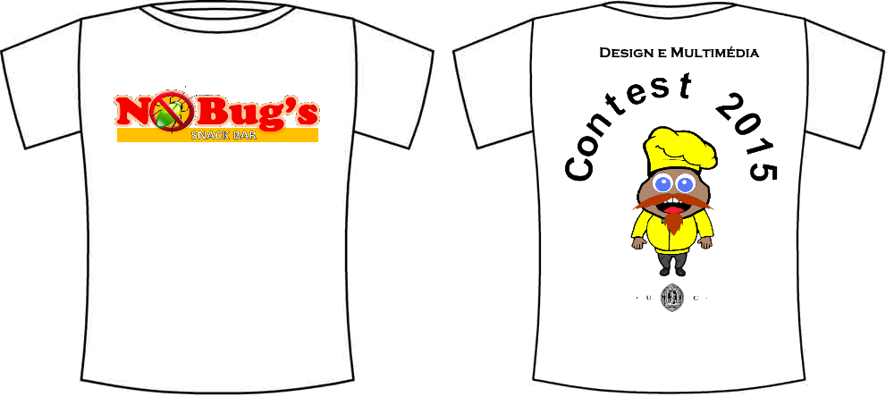

Início: 14hs de 14/11/2015
Fim: 14hs de 15/11/2015
Quem pode participar: toda gente com acesso ao jogo, ou seja alunos da TP1, TP2 e TP3.
Inscrição:
- Envie e-mail para nobugssnackbar@gmail.com
- Assunto: COMPETICAO
- No corpo do e-mail informe seu código do aluno
- Não há custo para participar
- Prazo final para inscrever: 12/11/2015
|
Premiação
Os três primeiros colocados ganharão uma t-shirt personalizada com seu avatar. O avatar a ser utilizado é aquele configurado no jogo antes de começar a competição.

|
Regulamento
- Será uma competição online no ambiente do próprio jogo;
- Durante as 24 horas estarão disponíveis 10 missões: 4 fáceis, 4 médias e 2 difíceis;
- As missões estarão acessíveis no jogo dentro do nível Chef;
- As dez missões estarão disponíveis à escolha do jogador. Isso quer dizer, que não precisa fazê-las na sequência;
- As dez missões estarão disponíveis a TODOS os jogadores inscritos, mesmo que não tenham vencido as 45 missões anteriores;
- Critério para determinação das posições no ranking: (1) quantidade de missões vencidas; (2) em caso de empate, quantidade de tentativas [execuções/depurações] para finalizar as missões vencidas; (3) se permancer o empate, tempo TOTAL para finalizar as missões vencidas.
|